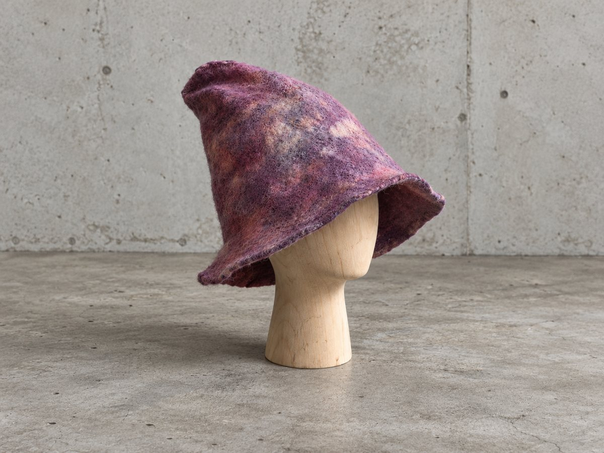

Tuftning
- Tid
- 4 timmar, 12–16
- Deltagare
- Max 6 per dag
- Pris
- Ingår
- Ram, väv, garn, tuftningsverktyg, lim och fika
- Ta med
- Ett motiv, skiss eller bild. Vet du redan vad textilen ska sitta på, ta gärna med det
- Kursledare
- Jonas Johansson
Lär dig tufta för hand med en Danella-maskin, ett danskt handverktyg från 1939. Gör ett tygmärke till väskan, sits till favoritpallen eller vart än din fantasi bär dig.

- 12–13
- Vi hälsar på varandra, sätter upp ramarna, skissar motiv, väljer garn och tittar på verktyg och tekniker.
- 13–16
- Vi tuftar. Mot slutet limmar vi baksidorna. De torkar över natten och hämtas i verkstaden dagen efter.
Full återbetalning fram till sju dagar före, därefter kan platsen överlåtas. Fullbokat? Mejla för väntelista.
Frågor och fakturor: j@jonasjohansson.se
Bastumössa
- Tid
- 6 timmar, 12–18
- Deltagare
- Max 6 per dag
- Pris
- Ingår
- Ull, verktyg, allt material och fika
- Ta med
- Ingenting
- Kursledare
- Rose Hallgren
Lär dig våtfiltning och skapa din egen bastumössa som du tar med dig hem efter kursens slut. Inga förkunskaper.

- 12–13
- Vi hälsar på varandra, går igenom processen, ritar mössans form och gör i ordning ull och arbetsplats.
- 13–14
- Ett provstycke: du testar tekniken på en liten kvadrat.
- 14–15
- Ullen läggs ut i lager, vågrätt och lodrätt, med vatten emellan: mössans fram- och baksida.
- 15–16
- De två arken fogas samman och mallen inuti tas ut.
- 16–17
- Mössan formas efter ditt huvud och får stadga.
- 17–18
- Kanterna putsas, och hinner vi lägger vi till dekor.
Full återbetalning fram till sju dagar före, därefter kan platsen överlåtas. Fullbokat? Mejla för väntelista.
Frågor och fakturor: j@jonasjohansson.se